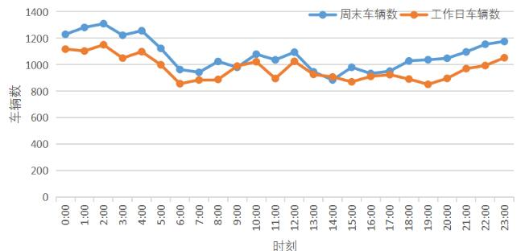

共享汽车站点间车辆综合调度系统
摘要
- 随着共享汽车行业蓬勃发展的态势，行业内出现模式过重、运营成本过高、无法盈利等问题。 共享汽车的“分时租赁”模式可以解决这个问题，为了控制成本、提高利润，本文建立基于目标规划算法的共享汽车站点间车辆综合调度系统，来制定对企业最有利的共享汽车调度方案。
- 针对问题1， 本文建立地理信息可视化模型来分析城市的共享汽车使用分布情况。首先，我们对附件所提供的数据进行预处理，剔除缺少关键信息的订单，删除用车时间小于2min且取还站点为同一站点的订单； 其次，对于空间分布情况，我们对全天或某一时段的汽车位置数据集通过Python算法构建空间热力分布图，通过聚类离散化的点，我们可以将城区分为五个部分，可以看出共享汽车分布情况为中部城区分布更为密集，且集中于各部分的中心区域； 最后，我们通过分析算出不同时段的热力中心及网格化统计数据，来分析某区域不同时段共享汽车使用频率，可以看出工作日与周末的出行时间分布呈现两种模式，工作日存在早晚“高峰”，而周末出行高峰主要集中在17：00至次日5：00时段，且周末总体车辆使用次数更多。
- 针对问题2， 本文以企业净利润最大、供需平衡、调度成本最低为目标函数建立基于目标规划算法的车辆调度模型，求得企业最有利的共享汽车调度方案。 首先，共享汽车的优化调度问题属于最优指派问题，优化目标是对企业最有利的共享汽车调度方案，我们设最大收益函数为目标函数，并转换为最小调度需求的成本函数，同时综合考虑供需平衡； 其次，我们以设站点空移车数为决策变量，基于实际情况作出假设，设立约束条件，以企业净利润最大为目标函数建立目标规划模型；然后，本文根据共享汽车调度问题的特征和对算法计算速度的高要求，采用遗传算法求解目标规划模型。 最后，本文根据共享汽车的特点，优化区域调度的模式（调度员利用拖车或驾驶的方式在站点之间通行），建立以运营公司收益最大为目标函数的混合整数规划模型，优化模型，并采用分支定界法求解模型，进一步求出最优调度方案（见5.5）。 经过灵敏度分析，该模型所求出的最优调度方案使得企业获得利润最高。
- 关键词：最优指派、目标规划、遗传算法、调度优化
一、问题重述
- 自2015年以来，共享汽车行业成蓬勃发展的态势。但因为模式过重、运营成本过高、无法盈利等问题，陆续有共享汽车公司因为资金链断裂而倒闭。消费者需要更轻更好的用车方式，而共享汽车的“分时租赁”模式很好地解决了这个问题。 但是这种方式的成本控制环节过多，导致盈利非常困难。所以，制定一个对企业最有利的共享汽车调度方案成为亟待解决的问题。
- 根据共享汽车的位置数据集中所提供的时间、经纬度等位置信息，以及停车点上停放的车辆的数量和车辆列表。我们需要建立数学模型分析该城市的共享汽车使用分布情况，并且制定一个对企业最有利的共享汽车调度方案。
二、问题分析
- 城市的共享汽车使用分布情况可通过地理信息可视化来进行分析，针对空间分布情况，我们可以对全天或某一时段的汽车位置数据集通过Python算法构建空间热力分布图， 来分析某个时段的共享汽车空间分布情况，进一步得出各个站点的使用频率； 针对时间分布情况，我们可以通过回归聚类分析算出不同时段的热力中心及网格化统计数据，来分析某区域不同时段共享汽车使用频率。
- 共享汽车的优化调度问题属于最优指派问题，优化目标是对企业最有利的共享汽车调度方案，我们可以调控区域调度数目、路程等方面来设立调度方案， 使得企业净利润最大、供需平衡、调度成本最低。基于上述分析，我们设调度数目、路程为决策变量，以企业净利润最大为目标函数，同时考虑汽车的供需平衡、调度成本等方面，建立目标规划模型，求得企业最有利的共享汽车调度方案。
三、模型假设
- 1.假设每个站点停车位都能停一辆共享汽车，且车辆在站点时，默认与充电桩连接充电；
- 2.假设所有电动汽车均为同一型号，一辆车在任何时刻只能服务一个任务需求；
- 3.假设站点每个停车位均配备相同属性的充电桩，并且充电时单位时间增加续航相同；
- 4.假设车辆任何时刻续航里程已知且不会故障，不受外部因素如温度、湿度的影响；
- 5.假设车辆循环使用，完成一个任务后，如果续航满足要求，可以继续完成下一个任务；
- 6.假设运输成本仅有路程决定，不受外部因素如交通、路况的影响。
四、定义与符号声明

五、模型的建立与求解
5.1 分析该城市的共享汽车使用分布情况
- 本文通过地理信息可视化对城市的共享汽车使用分布情况进行分析，针对空间分布情况， 我们对全天或某一时段的汽车位置数据集通过Python算法构建空间热力分布图，来分析某个时段的共享汽车空间分布情况，进一步得出各个站点的使用频率； 针对时间分布情况，我们通过聚类回归分析求得不同时段的热力中心及网格化统计数据，进而分析某区域不同时段共享汽车使用频率。
- 5.1.1数据处理
- 数据清洗经以下5个步骤：①删除缺少关键信息的订单；②删除“用车时间”小于2min且取、还站点为同一站点的订单。
- 5.1.2基于马氏距离的红外异常样品剔除算法
- 针对附件给出的上万条数据，显然需要进行一些预处理。我我们选择了PCA结合马氏举例法剔除红外异常样品。先利用主成分分词(PCA)将数据降维，以消除众多信息共存中相互重叠的信息部分。 利用得分数计算马氏距离，将相似度低的原样本进行剔除。具体方法如下：
- 首先是计算得分，其中X为相关因子矩阵，P为载荷矩阵，n为样品数，m为变量数，N为主成分数。

- 然后计算校正集样品到平均光谱的马氏矩阵，其中M代表因子分析中得分阵的协方差阵，Ti为样本i的得分向量。
- 而后检验样品中奇异样品存在的阈值范围。

- 当`D_i>=D_f`则认为相关因子与线路定价在主成分空间中相似，`D_i-D_f`值越小，相似度越高。 通过设置不同的阈值范围参数从而调节相似度的高低。 当e值越小，相似度越低，成为异常因子的可能性越大。
- 通过此模型对附件数据预处理，异常数据的直观反映如下图所示。

- 因此，利用马氏距离法能有有效剔除样品集中存在的异常样品，提高了校正模型的预测能力。
- 5.1.3基于Python算法构建热力分布图对共享汽车空间分布进行分析
- 本文通过地理信息可视化对城市的共享汽车使用分布情况进行分析，针对空间分布情况，我们对全天或某一时段的汽车位置数据集通过Python算法构建空间热力分布图，如下所示。
- 由图可知，在某天中，在空间中的共享汽车使用分布情况是不均匀的，在整个城区全覆盖的情况下，主要集中分布的部分区域与其边缘差异较大，为了进一步分析空间中共享汽车的分布情况， 我们将城区化为五个区域，并将共享汽车分布情况离散化，如下图所示。

- 五个区域的中心经纬度坐标：A(32.11,34.79)、B(32.11,34.83)、C(32.08,34.78)、D(32.05,34.76)、E(32.05,34.80)。由上图可知，C区共享汽车使用分布最多，B区D区共享汽车使用分布较多，A区E区共享汽车使用分布较少；从整体看，共享汽车使用集中于城市中心部分； 从各区来看，共享汽车使用集中于各区中心部分。
- 5.1.4基于回归分析对不同时段的热力中心及网格化统计数据进行分析
- 本文首先用描述性统计的方法分析附件数据出行总量、出行时间和空间等特征，并用多元线性回归和二项logistic回归识别对比用户及共享汽车特征。
- (1)用户用车频率模型
- 研究利用多元线性回归模型解决第一个问题，并用逐步法对自变量进行筛选处理，多元线性回归模型如下：

- 式中：`Y`为因变量；`x_i`为自变量（影响因素或相关因素）；`b_0`为常数项； `b_i`为回归系数；`e`为随机误差。
- (2)高峰时段出行者模型
- 研究通过二项logistic回归模型计算用户是高峰时段出行者的概率， 并用向前条件法筛选自变量。该模型的因变量Ｙ仅有０和１两个状态，设某用户是交通高峰时段出行者为`Y=1(P=1)`，则模型如下：
- 式中：`P/(1-P)`为优势比，即结果为1与结果为0的概率比值。
- (3)订单时间分布
- 周末日均订单量多于工作日。周末订单占总订单量的1/3，周末日均订单为工作日的1.2倍。出行时间周分布图如图所示。
- 
- 由上图可知，工作日与周末的出行时间分布呈现两种模式，工作日存在早晚“高峰”，而周末出行高峰主要集中在17：00～次日5：00时段，且周末总体车辆数更多。这是因为工作日期间休闲社交等活动只能于夜间发生， 而周末在日间即可提前释放休闲、社交等目的的出行，且其休闲社交等活动比例更大。
5.2 基于目标规划算法的共享汽车调度模型
- 共享汽车的优化调度问题属于最优指派问题，优化目标是对企业最有利的共享汽车调度方案，我们通过调控区域调度数目、路程等方面来设立调度方案， 使得企业净利润最大、供需平衡、调度成本最低。基于上述分析，我们设调度数目、路程为决策变量，以企业净利润最大为目标函数，同时考虑汽车的供需平衡、调度成本等方面，建立目标规划模型，求得企业最有利的共享汽车调度方案。
- 5.2.1决策变量
- 设站点空移车数xtij决策变量，表示在时间结点t时，站点ij的空移车数。
- 5.2.2目标函数
- 设最大收益函数为目标函数，并转换为最小调度需求的成本函数，即

- 其中：t表示服务周期，将一个运营周期等分为M段，每段的开始为时间结点t={1,2,...,M}； n表示网点个数；dij表示站点i到站点j距离； cij表示从将共享汽车站点i调运到站点j所用的调运成本； 假设调运过程中单位距离调运成本相同，因为不同站点之间道路交通状况不同，所以利用Floyd算法求得调运成本cij； xtij为决策变量，表示站点空移车数，且i≠j（xtij为非负整数变量）。
- 5.2.3优化目标
- 根据方案，为使各个平台任务量尽量均衡，本文设任务均衡度为衡量分配方案综合均衡程度的指标，其定义为各个节点任务数标准差，如下所示：

- 其中pij为第i个平台时第j个路口节点的任务数目，pj为第j个路口节点的发任务数目； ηij为0-1决策变量。根据定义任务均衡度σ越小时任务越均衡，我们进一步得到工作量均衡度最小的目标函数为：
- 5.2.4约束条件
- (1)在任何时刻车辆续驶里程均大于零，即

- 5.1.3 信贷策略的提出
- （1）银行利润最大化

- （2）金额均衡分配化

- （3）两方案的最终信贷政策

5.2 问题2模型的建立与求解
- 5.2.1 BP神经网络模型的选择与建立
- （1）选择 BP 神经网络模型的原因
- （2）设计 BP 神经网络学习模型


- （3）设计 BP 神经网络预测模型


- 5.2.2 信贷策略的提出
- 5.2.3 模型的求解


5.3 问题3模型的建立与求解
- 5.3.1 层次结构模型的建立
- （1）层次模型的构建


- （3）得出金额
- 5.3.2 模型的求解


六、模型检验与灵敏度分析
6.1 模型的评价
- 6.1.1 问题一的模型评价
- 6.1.2 问题二的模型评价
- 6.1.3 问题三的模型评价
6.2模型的推广
七、模型评价与推广
7.1 模型的评价
- 7.1.1 问题一的模型评价
- 7.1.2 问题二的模型评价
- 7.1.3 问题三的模型评价
7.2模型的推广